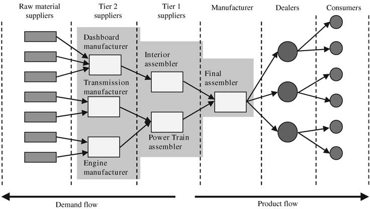
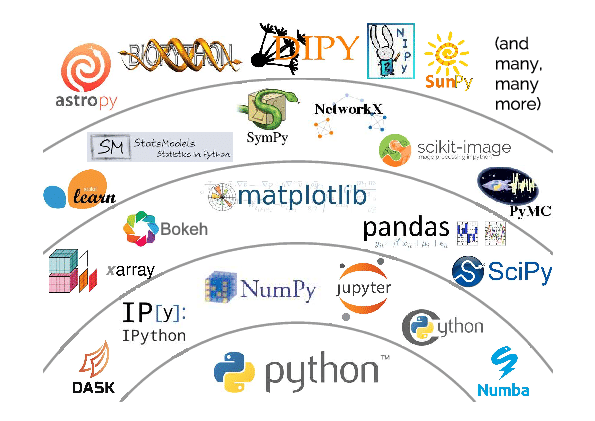

11 From Stack, to stream, to ecosystem.
Metaphors help us build an image of the organization of complicated sociotechnical systems. In this class I discuss four key metaphors employed in the discourse around software and the organization of its production and distribution: a “stack”, a “stream” (esp. “upstream”/“downstream”), a “supply chain”, and an “ecosystem”.
11.1 Stack

When a programmer writes code they do so in a concrete workspace, a filesystem containing libraries which we can think of as their raw materials. That filesystem might be on a laptop, a server accessed by ssh or through a notebook server, or a docker image. Together with tools to write code (editors) and local configurations (.profile) these workspaces are called dev environments.
The actual code newly written by the programmer orchestrates this assemblage of code to build analyses, create graphs, do science. That code is a thin layer sitting atop a range of received code, from plotting libraries, filesystem utilities, operating systems. We refer to these chunks of code in various ways, libraries, packages, modules, services and we refer to the language used to access that code as interfaces, APIs, hooks, exposed names of methods/procedures. For any particular piece of code it is possible to trace paths of execution from the newly written code (sometimes called a “call tree”), through calls and parameter lists.
The way that new code “sits on top of” received code is often visible to the programmer on error when they scan the “stacktrace” looking for the location of errors and hints on how to overcome them.

The stack in stacktrace refers to a very specific set of memory locations and post-compiler processes of code execution, but colloquially we have come to refer to the assemblage of code underlying newly written code in the workspace as “the stack”. This metaphor makes clear the layering of dependency between code: packages called by newly written code are thought of as lying immediately below, and indeed physically supporting, the newly written code. The packages called by that first supporting layer are seen to support that layer, lying physically beneath and supporting all the layers above. Abstracting from any particular execution path of a particular piece of code, we understand packages to underlie and support any package which calls code from them, the typical patterns of usage forming a picture of hierarchy. From this understanding we get the ubiquitous “stack diagram” showing a neat layered structure. (Incidentally a “full stack” developer is one that is expected to be able to write code across the data and execution paths in locally written software, not usually “down” into the full stacktrace!).
Being lower in the stack is a result of having more code (especially packages which are themselves called by other packages) that calls you, and thereby being involved in a wider range of software execution paths. A filesystem module would be involved in game development and in climate change modeling; a graphing library called from code to describe election results and counting cat pictures on twitter. These different kinds of applications and analyses reflected in more specialized packages can be thought of as structures of packages stacked atop other packages, moving upwards through an ever more elaborate stack diagram, showing spires of specialization, both in application area and in higher-level language, Python vs dotNet for example. Frequently we see alternative stacks, even within specific areas, such as R vs Python datascience or even within a language group, such as R tidyverse vs “base R” vs R data.table.


In terms of workspaces this means that these “lower” packages were present in a wide range of different workspaces, as new code was written. In different workspaces working on different kinds of code, needing different kinds of analyses, algorithms, and capabilities, different sets of packages are present.
How then do packages get to workspaces?
In “user space” software is often obtained by visiting a website and hitting “download,” receiving an application to be copied to a location on the computer. Even much vaunted “app stores” are merely a pay-walled version of this. In “dev space” code can arrive in this way, with a user downloading source code, sometimes called a “tar-ball” after the historical tool to pack many files into one for ease of downloading, and unpacking it into their programming workspace. This is problematic, though, because the downloaded code is not useful without its dependencies, the relatively lower layers in the stack. Resolving this leads to practices that provide dependencies together with the downloaded code (through techniques such as “static compilation” or bundling). Or rather providing reduced slices of the underlying libraries, reflecting the precise execution path, rather than the full set of underlying code and its possibilities. Unsurprising when stacks of code can be large (or very large, such as the notorious TeXLive which is over a gigabyte in size). Quite quickly, installing software this way can result in multiple copies of underlying code being present on the computer, located in different bundles installed at different times and in different places. For programs in “user space” this is only mildly problematic, taking up more space than strictly needed, but space is cheap and the complexity is entirely hidden from the user.
In “dev space”, though, the programmer may want to access different capabilities of underlying libraries (unleashing the “innovation potential” of the “option value” inherent in “modularity” as management science would put it, see Chapter 7). As a toy example consider downloading code that sorts a list of addresses by zipcode, bundling a numeric sort from an underlying library. Should we now want to sort alphabetically we would either have to implement that ourselves with new code, or obtain the underlying library to gain the alphabetical sort capability.
Pretty soon, we would have multiple versions of the underlying library, and all the packages underlying them, lying chaotically around the filesystem, each installed at different times and having sometimes subtly different behaviors. Given the complexities of the many ways that compilers look for and prioritize code this can lead to immensely frustrating confusions (Any one that has struggled to understand the PATH parameter in Java, or been stymied by a stray .py file named the same as an obscure library, will attest). This situation will result in code that is hard to reuse because it is heavily dependent on the location in which it is written, with hardcoded paths, and special cases.
11.2 Package managers
Enter the package manager. Package managers stand between the projects writing packages and the individual workspaces of programmers. Examples include Python’s pip, Perl’s CPAN, R’s CRAN, Javascript’s npm, and Java’s Maven, as well as operating system distributions (such as Debian’s apt-get) and cross-language collections such as Homebrew, SBGrid, and Anaconda. All subtly different, their vision includes an installation tool that programmers use to identify the high-level library they want to access, a well-specified location for installed software. They include a metadata scheme to describe dependencies and a graph traversal approach to “resolve dependencies”. Together this allows programmers to install libraries and have the package manager take care of ensuring a minimal and coordinated install of underlying packages.
Package managers also enable programmers to smoothly update the libraries in their workspaces to newer versions, taking care of the cascading need for updates further down in the stack. Yet not all packages are ready to interact with newer versions of down stack packages, packager managers can also keep older versions installed and available to those parts of the stack that need them (sometimes called “pinning”). The ability of packager manager to update software stacks means that novel capabilities can be distributed out to potential programmer users, while facilitating stability and coordination across the installed stack in individual programmer workspaces.
11.3 Stream
https://www.mountainhearth.com/2015/02/rivulets.html
The production system that produces the stack is spoken about as a stream.
The stream flows along paths defined by dependency links and, over time, things move along these links, new capabilities, approaches, and sometimes bugs and problems!
The language here is far from precise (and confusing if one thinks too literally!), but in general packages lower in the stack are considered to be “upstream” (towards the source) and packages closer to specialized users, are considered to be “downstream” (even though they are higher in the stack diagrams).
The image is of rivulets, diverging into smaller and smaller specialized paths akin to the “spires” in the stack metaphor.
The stream analogy is particularly useful when thinking about how changes spread out, becoming used by nearby packages, and eventually making their way to programmer’s workspaces via package managers.
Consider a new piece of software functionality, such as a novel analysis, a new data structure, or a bug-fix. In a concrete sense these originate in a specific programmers workspace and must be distributed to spread out to eventual users. In practice this means that the change has to travel back “upstream” before traveling “downstream” through the packager manager managed flow that will eventually bring it to the workspaces of other developers.
That “upstream” flow likely starts with a push from the programmer’s local filesystem, into their repository hosted online (e.g., github). If the change is instantiated as a new package itself, it can make its way into the package management flow through submission to a package manager (which pulls from the repository, confirms dependency information, builds, tests, and publishes the package and its documentation).
If the change is not a new package itself, but an edit to an existing package, before that change can enter the flow and travel downstream to programmers, the change needs to move from the individual programmer’s repository into the main repository for the package. In this case the individual programmer’s repository is a “fork” of the main package repository, which means that the repository hosting service (github, gitlab etc) stores the connection between the repositories, making it easy to initiate a “pull request” (colloquially called a PR). A PR is a note to the maintainers of the destination package repository that a proposed change is available and ready for pickup. The maintainers, change author, and package community, can then test and discuss the change. If appropriate, the maintainers can “merge the PR” bringing the change into the development version of the package, to be included in a new versioned release submitted to the package manager.
Changes thus enter the package manager facilitated flow, and travel down paths defined by dependency relationships.
The speed at which changes travel depends on a few factors. Perhaps a user of the package is watching the PR and ready to rapidly update the code in their workspace to tackle an analysis issue on a deadline, or perhaps an update of dependencies happens as a downstream package is getting ready to deploy updates of their own by “rolling” up a new release. Updates can also be quite slow, as end-user scientists return months later to previous workflows after collecting new data or inventing new techniques. Updates flowing can also be blisteringly quick, in that package management systems or individual package projects themselves can undertake “continuous integration” which means automatically updating all components frequently (daily or even on every commit of new code). Continuous integration is an approach to gain early insight into issues caused by changes in the underlying stack.

https://www.flickr.com/photos/mrhayata/6933963596
As changes propagate downstream they bring with them implications and work. A package project updating dependencies may be receiving new opportunities, new ways to simplify and implement long-standing desires of the project and its users, unlocking a flurry of consequential activity and excitement in the receiving project.
Or, less sanguinely, a project may discover that their code no longer builds, due to “breaking changes” in the underlying libraries, requiring the receiving project to either resolve these issues through local workarounds or adaptations, or essentially reject the flow of changes by “pinning” their dependency to an earlier version.
Perhaps more pernicious still are changes in behavior of underlying libraries that are not obvious at build time, and don’t show up in batteries of tests, but only when a package is in use in the field. Thus a change in an underlying library can appear benign but lead to confusing bug reports. These issues can take time to trace to the changed dependency, appearing at first to be newly discovered issues in the receiving project’s own evolving code. Even when the issue is traced to the change in the dependency, work is still implied as the package developers have to now act as users of the underlying dependency and report the issue to the “upstream” package. Developers can try to exhort their own users to report the issue upstream, but the intricacies of just how the issue in the dependency is causing the problem in the user space often requires protracted, three-way discussions between the downstream user, the developers of the package being immediately used, and the developers of the underlying dependency.
An appreciation of the scale of the work implied by package updates comes into focus when one recognizes that each change arriving at each downstream package can cause changes at the receiving package, and those reaction changes are themselves incorporated in new releases and thus moved into the flow, and themselves travel to their own downstream packages and users, each potentially kicking off new rounds of changes, a cascade of reactions to reactions to reactions, reverberating and crisscrossing throughout the network of package dependencies.
The pressure to be up to date (and thus the pressure to undertake the adaptation work needed) comes not only from the new opportunities offered by changes, but also because it is far easier to get insight and help from both developers and fellow users when encountering problems or learning about software when one is working with relatively recent code. Not only are developers more aware of how recent versions work, they are far more likely to be motivated to help, both to explain the work they have recently done and share the new opportunities they are bringing to downstream users, but also to identify, characterize, and resolve possible bugs introduced. Finally, issues faced by users can stem from bugs already fixed, so “getting on the same page” is seen as respectful of package developers and active users time.
11.4 Supply Chain
The stream metaphor conveys the idea that work is passing between projects, both upstream and downstream. Alongside the stream metaphor has developed the metaphor of the supply chain. This draws more on business logistics ideas. In a supply chain complex products pull together components, each of which is produced further back in the supply chain, eventually going all the way back to raw materials.
In this image we can see the idea of a supply chain for the automotive industry. See how each “tier” of suppliers provides items needed by the Manufacturer? These are then thought of as similar to software dependencies.
 https://stateofwales.com/wp-content/uploads/2018/10/A-generic-supply-chain-scheme-illustrating-an-automotive-supply-chain.png
The supply chain metaphor has seen particular uptake among those concerned with security, where the focus is on watching for the possibility that a “backdoor” or other security exploit might be inserted into a dependency and then allow exploitation of any product whose software stack includes that dependency. The idea is the same as a car having to be recalled because (in a real example) the airbag supplier component failed, killing people.
These have become known as software supply chain attacks, as described in this US Federal Government policy/education document. https://www.cisa.gov/resources-tools/resources/defending-against-software-supply-chain-attacks
11.5 Ecosystem
A fourth metaphor is that of code in an ecosystem. The ecosystem metaphor emphasizes that packages seem to be alive, altering the landscape on which other packages live, creating and consuming resources of time, attention, and opportunities. It also builds on the idea that software packages can have “affinities” between them, making them more compatible. These “affinities” can include aspects such as language, data format expectations (input, output, and working data structures), or design philosophies expressed in software architectures. A classic example would be the way that the R tidyverse packages all center on data organized according to “tidy data principles” which argue for a particular layout of data frames.
These affinities are likely related to (or even signaled by) overlapping developers and supporters (both individuals and organizations), developing in a structurational way. Additional affinities might include well known examples of use, such as in widely read blogs, conference presentations, tutorials, or discussions on Q&A sites/forums/mailing lists.
Affinities give rise to the feeling of physical closeness between packages which is core to how developers discuss code. This idea of closeness is reflected in the metaphors employed, from calling packages “nearby” talking about “neighborhoods” and “communities”, as well as grouping into vertical/horizontal closeness in the “stack” metaphor, and geographic connection in the “stream” metaphor. In particular as package affinities develop, giving rise to downstream packages, the language expresses not only closeness of packages with affinities, but a clustering, a tightening of affinities and links within the cluster and de-emphasis of links across clusters, leading to a perception of separateness.
This idea can be seen in the language of “software ecosystems”, usually reflecting a cluster around some central artifact or library. The core element of that metaphor is closeness and the provision of services to each other, relatively local relationships that enable collective, sustained, evolving function. Ecosystems, as they become denser, also develop new functionality, perhaps coming to be alternatives to software already in that “space”. Here the ecosystem metaphor again invokes the ecological idea of competition for space, and the resources that space implies, albeit with deep vagueness about whether users, developer time, or option-value from dependencies, are the things being competed for.
Ecosystems can be nested, with specific ecosystems embedded within more general software clusters. As one zooms out more expansive metaphors of space and connection are used, including planet and universe, but generally the idea of embedded ecosystems continues to work well. For example, one might say that the ggplot ecosystem is embedded in the tidyverse which is embedded in the R ecosystem which is embedded in the data science ecosystem. Generally, though, the metaphor seems most apt for clusters of software that are scaled so that individuals can monitor and perceive activity.

https://www.researchgate.net/publication/332799309/figure/fig1/AS:753947908272130@1556766597837/Schematic-view-of-the-Python-scientific-software-ecosystem-Figure-taken-from-Jake.png
11.6 Exercise
Work with a partner.
- Identify a software project that one of you have recently done (perhaps for a class project in Informatics classes) and build a dependency graph. You can use any drawing tool you like, including pen and paper.
- First, identify the direct dependencies of your software (we will call these Tier 1). These are those that you explicitly import in your code. You can stop after identifying five Tier 1 dependencies.
- Then, for at least three of your Tier 1 dependencies, identify your Tier 2 dependencies by identifying packages that your Tier 1 dependencies also depend on.
- Finally, build out a layer of Tier 3 dependencies, identifying at least two packages that each of your Tier 2 packages explicitly depends on.
You may find that your stack does not resolve neatly into entirely separate Tiers. That’s ok, you can revise your diagram however you best think conveys your stack.
With your particular stack, identify a Tier 1 dependency and describe the services that that package provides. Are there alternative packages that also provide these? Are there particular affinities between your code of your Tier 1 dependency?
With your stack, would you say that your tool exists in a software ecosystem? Perhaps it exists in multiples? Write a sentence or two that highlight the software ecosystems that your tool exists within.
If you have time, you could see if you can identify code moving upstream within the package supply chain represented by your diagram. You might identify that by searching downstream package issues for the names of upstream packages/projects (or vice versa).